遊びで植物を育てよう
2024/09/16
秋のクチナシが咲きました。

暗がりに白い花が目立ってました。
近づくと甘い香りがして、ちょっとリラックスしました。
家にクチナシがあってよかった。
【クチナシTOP】
【木TOP】
【園芸TOP】
2024/06/18
クチナシは見た目がイマイチですが匂いはいいです。
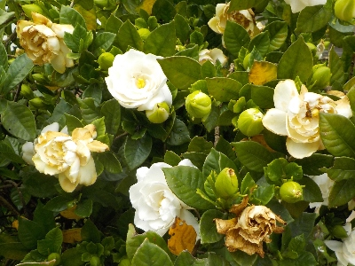
茶色くなったものを日々取り除いている人はどれくらいいるんだろう。
取ればキレイなんだろうけど、それに手間暇はかけれないな。
【クチナシTOP】
【木TOP】
【園芸TOP】
2024/06/02
今年最初のクチナシは奇形でした。
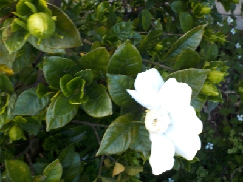
まあ、いろいろあっていいんでしょうね。
【クチナシTOP】
【木TOP】
【園芸TOP】
2023/06/20
鉢植えのクチナシが咲きだしました。
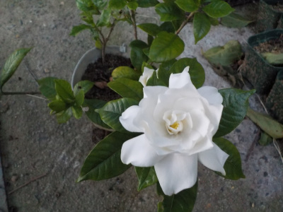
地植えのクチナシは花がだいぶ終わりましたが、鉢植えはこれから開花です。
小さい個体は開花が遅いのかな。
【クチナシTOP】
【木TOP】
【園芸TOP】
2022/09/04
秋のクチナシが咲きました。
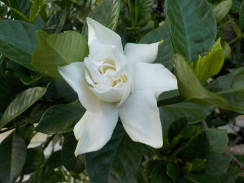
ちょっと涼しくなったせいかクチナシが咲きだしました。
秋になりましたね。今年の秋も出かける予定はないので、のんびり園芸をやろうと思っています。
【クチナシTOP】 【木TOP】 【園芸TOP】
2022/06/19
コンパクトな木でクチナシが咲きました。
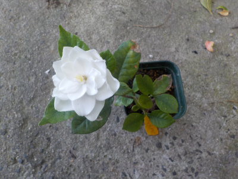
挿し木で増やしたクチナシの木で花が咲きました。
小さい木でも花が咲くんですね。
【クチナシTOP】 【木TOP】 【園芸TOP】
2022/06/11
綺麗なクチナシの花があったので写真を撮りました。
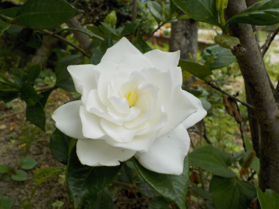
綺麗なモノを写真に残すのって楽しいですね。
より綺麗な写真を撮りたいので、ちょとと高いカメラが欲しいって思うんですど、今のところ使いこなす自信がないので買わないです。
【クチナシTOP】 【木TOP】 【園芸TOP】
2022/06/09
甘い匂いがすると思ったらクチナシが咲いていました。
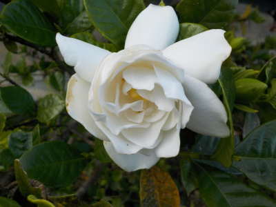
風がなかったので匂いがよくわかりました。
これからしばらく楽しめそうです。
【クチナシTOP】 【木TOP】 【園芸TOP】
2021/07/10
挿し木のクチナシのツボミが落ちました。
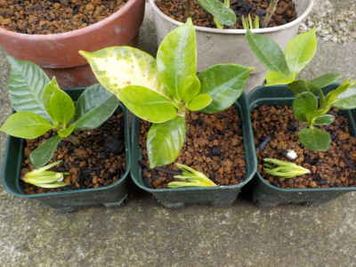
鉢上げしたら環境が悪くなったんでしょう。ツボミを落としました。
ペットボトルの密閉空間は余程快適だったんでしょうね。
根っこが出たての小さい木で、花の維持は無理でしょう。
【クチナシTOP】 【木TOP】 【園芸TOP】
2021/07/03
クチナシの挿し木が急成長しました。
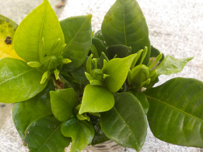
クチナシの挿し木を見たら、ツボミっぽいものが出来ていました。
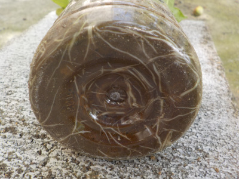
ペットボトルの底には根っこがありました。
2か月前に根っこは全然なかったので、急成長したようです。
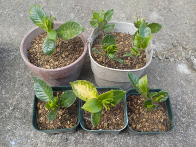
8本挿し木して全部根っこが出てました。
枯れるかも知れないので、全部植え替えしました。
何本成長するかな。
【クチナシTOP】 【木TOP】 【園芸TOP】
2021/06/20
今日はクチナシの匂いがしました。
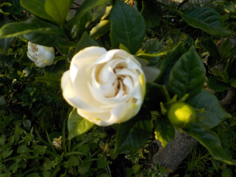
前回匂いがしなかったクチナシですが、今日はありました。
強い匂いじゃないので、風向きに左右されますね。
【クチナシTOP】 【木TOP】 【園芸TOP】
2021/06/13
クチナシの花が咲いていました。
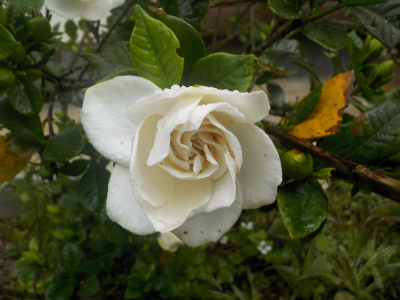
いい香りがするかなと近づきましたが、匂いがありませんでした。
何か条件が悪かったのかな。
【クチナシTOP】 【木TOP】 【園芸TOP】
2021/05/15
クチナシの挿し木は気持ち悪いくらい変化がないです。
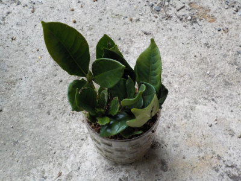
挿木しても半年経ちますが、ほとんど変化がありません。
青々としているので根っこがあるかも？と確認してみましたが、ありませんでした。
根っこなしで半年も青々していれるって凄いですね。
【クチナシTOP】 【木TOP】 【園芸TOP】
2020/10/24
クチナシの挿し木をしました。
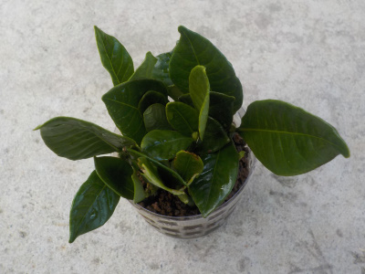
あまり興味がなかったクチナシですが、この頃綺麗に咲いててよく見ていたので、枯れた時の予備に挿し木することにしました。
挿し木の仕方や時期をは調べていないです。
やってみようって思ったので、サクッとやってみました。
ネットや書籍で調べてもいいですが、それ見るとやる気がダンダン薄れていきます。
時期があったり、出来る出来ない、環境とかいろいろ書かれています。
その通りにやれば確率が高いかもしれません。沢山欲しければそうしますが、ちょっとでいいのでそうゆう記事って無視することにしました。
ダメならまたやればいいだけです。
【クチナシTOP】
【木TOP】
【園芸TOP】
葉っぱを食べられないように薬剤を使いましょう。
【おいしいものを食べよう。】【たくさん寝よう。】
【ソロ活をしよう!】【季節感のあることをしよう。】【動画視聴はほどほどに。】【当サイトの全てのコンテンツは無断転載禁止です。】